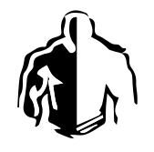
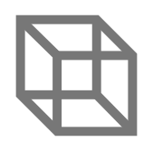

On the Subject of Reporting Anomalies
Stop bothering me, I’m on observation duty.
- This module is based on I’m on Obseration Duty. There are 3 rooms that you are viewing through security cameras. Throughout the bomb, anomalies may appear in each of the rooms and it is your job to report them.
- For each non-ignored module that is solved on the bomb, there is a 30% – 40% chance of an anomaly occuring in one of the rooms.
- You report anomalies by pressing REPORT, selecting the room in question, and selecting one of these buttons for what type of anomaly occured:
Press the checkmark to confirm, press the X to cancel.
Intruder - There is a person in the room
Extra Object - A new object
Object Missing - An object went missing
Lighting Anomaly
Door Opening / Closing
Camera Malfunction - Camera is inaccessible
Object Movement - Object has moved
Painting / Picture Anomaly
Abyss - Huge expanding black sphere - If there are at least 4 active anomalies, you strike. If there are at least 3 active anomalies, a warning will be displayed alerting the defuser that they are in danger. This will only appear once and will be nullified if it occurs during the startup sequence.
- If multiple Reporting Anomalies are on a bomb, exactly one of them will be fully functional (i.e. only one of them can report the anomalies). The duplicates will be able to act as extra monitors, allowing the defuser to view multiple rooms at once (at the cost of increased lag).